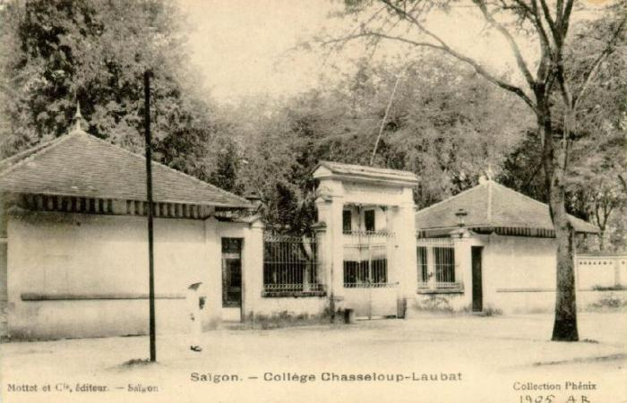
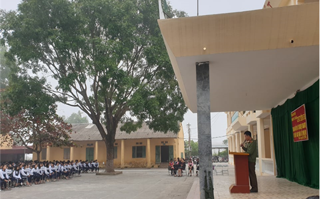

LỊCH SỬ TRƯỜNG THPT TÂN DÂN
Trường THPT Tân Dân được thành lập theo Quyết định số 842/1998/QĐ-UBND ngày 13/08/1998 của UBND tỉnh Hà Tây. Khi mới thành lập cơ sở vật chất ban đầu vô cùng khó khăn, lạc hậu. Nhà trường phải sử dụng các phòng học từ hai dãy nhà kho cấp 4 cũ của Công ty lương thực Hà Tây để lại, trang thiết bị dạy học thiếu thốn, sơ sài, số lượng giáo viên chỉ có 8 thầy cô. Hơn nữa, đa phần học sinh có đầu vào thấp, nhiều học sinh có hoàn cảnh gia đình khó khăn...Từ những vất vả ban đầu, tập thể cán bộ giáo viên nhà trường đã nỗ lực khắc phục khó khăn, nhiệt tình bám lớp, bám trường. Trong 22 năm qua, các thế hệ thầy và trò đã đoàn kết, phấn đấu xây dựng nhà trường ngày càng phát triển và thành công như ngày hôm nay. Để đạt được những kết quả đó, cấp ủy, BGH và HĐSP nhà trường đã đưa ra nhiều giải pháp thiết thực, phù hợp với thực tế nhà trường.
Năm học 2020 -2021 là năm học tiếp tục thực hiện Nghị quyết 29 của BCH TW Đảng về đổi mới căn bản và toàn diện giáo dục đào tạo. Với sự nỗ lực cống hiến, lao động, học tập, sáng tạo thầy và trò trường THPT Tân Dân đã đạt được hầu hết các chỉ tiêu kế hoạch, hoàn thành xuất sắc nhiệm vụ năm học. Năm học 2020 -2021 là năm học tiếp tục thực hiện Nghị quyết 29 của BCH TW Đảng về đổi mới căn bản và toàn diện giáo dục đào tạo. Với sự nỗ lực cống hiến, lao động, học tập, sáng tạo thầy và trò trường THPT Tân Dân đã đạt được hầu hết các chỉ tiêu kế hoạch, hoàn thành xuất sắc nhiệm vụ năm học. Năm học 2020 -2021 là năm học tiếp tục thực hiện Nghị quyết 29 của BCH TW Đảng về đổi mới căn bản và toàn diện giáo dục đào tạo. Với sự nỗ lực cống hiến, lao động, học tập, sáng tạo thầy và trò trường THPT Tân Dân đã đạt được hầu hết các chỉ tiêu kế hoạch, hoàn thành xuất sắc nhiệm vụ năm học. Năm học 2020 -2021 là năm học tiếp tục thực hiện Nghị quyết 29 của BCH TW Đảng về đổi mới căn bản và toàn diện giáo dục đào tạo. Với sự nỗ lực cống hiến, lao động, học tập, sáng tạo thầy và trò trường THPT Tân Dân đã đạt được hầu hết các chỉ tiêu kế hoạch, hoàn thành xuất sắc nhiệm vụ năm học. Năm học 2020 -2021 là năm học tiếp tục thực hiện Nghị quyết 29 của BCH TW Đảng về đổi mới căn bản và toàn diện giáo dục đào tạo. Với sự nỗ lực cống hiến, lao động, học tập, sáng tạo thầy và trò trường THPT Tân Dân đã đạt được hầu hết các chỉ tiêu kế hoạch, hoàn thành xuất sắc nhiệm vụ năm học. Năm học 2020 -2021 là năm học tiếp tục thực hiện Nghị quyết 29 của BCH TW Đảng về đổi mới căn bản và toàn diện giáo dục đào tạo. Với sự nỗ lực cống hiến, lao động, học tập, sáng tạo thầy và trò trường THPT Tân Dân đã đạt được hầu hết các chỉ tiêu kế hoạch, hoàn thành xuất sắc nhiệm vụ năm học. Năm học 2020 -2021 là năm học tiếp tục thực hiện Nghị quyết 29 của BCH TW Đảng về đổi mới căn bản và toàn diện giáo dục đào tạo. Với sự nỗ lực cống hiến, lao động, học tập, sáng tạo thầy và trò trường THPT Tân Dân đã đạt được hầu hết các chỉ tiêu kế hoạch, hoàn thành xuất sắc nhiệm vụ năm học.